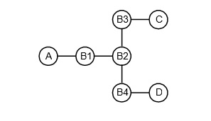
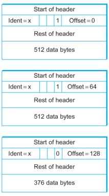

Spring 2022 IS496 Homework 3
Total Points: 70 points
Scope: Chapters 3
Due: April 15, 2022 by the end of day (11:59 pm CST)
Grouping: To be completed individually
Note: This assignment is also available in the Word Document (.docx) format and can be downloaded here.
Problems
Problem 1: [10 points] What is the MAC protocol of Ethernet and describe how it works using your own words. Does Wireless MAC protocol use "collision detection"? If yes, explain why. If not, explain why not.
Problem 2: [10 points] What is a hidden terminal problem? How is the hidden terminal problem addressed in 802.11 networks?
Problem 3: [32 points, 8 points for each switch's forwarding table]
Consider the arrangement of learning bridges shown in the following figure. Assuming all are initially empty, give the forwarding tables for each of the bridges B1-B4 after the following transmissions:
(Note: You only need to show the final forwarding tables after all three transmissions: A->C, C->A, D->C).
- A sends to C
- C sends to A
- D sends to C

Problem 4: [18 points] Suppose the fragments of a packet as shown in the following figure all pass through a router onto a link with an MTU of 252 bytes. Show the fragments produced. If the packet was originally fragmented for this MTU, how many fragments would be produced?
Note: The MTU includes the IP header (20 bytes) and the IP datagram payload.

Submission Instructions
Create a PDF file containing your answers. Place your name and netid at the beginning of the file.
Upload the file to the corresponding assignment on Canvas.